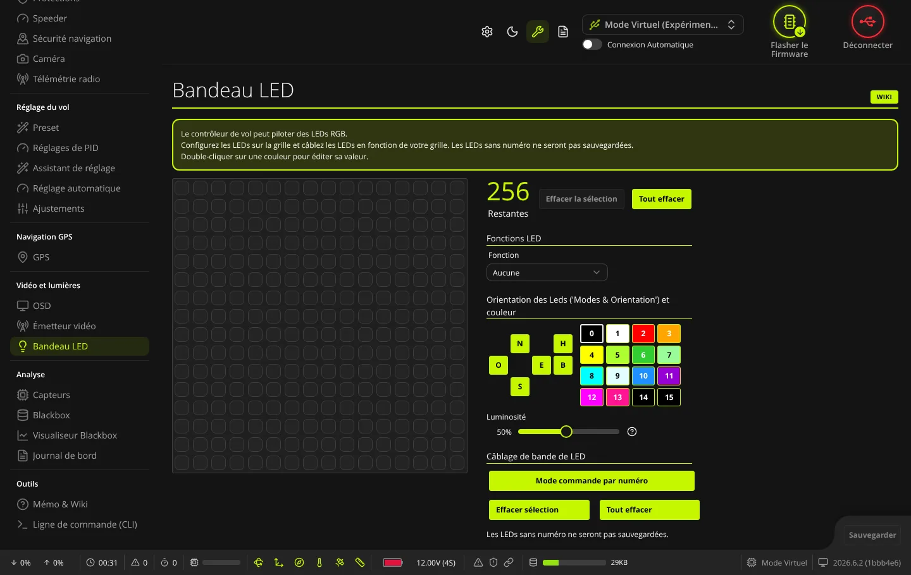
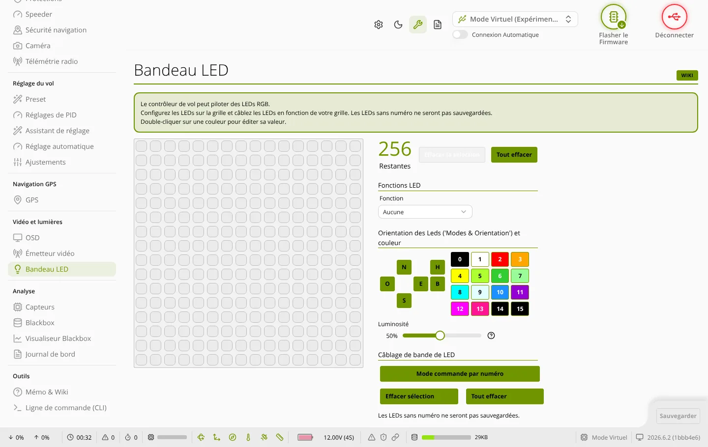

TRUE
TRUEBandeau LED
L'onglet Bandeau LED (groupe « Vidéo et lumières ») sert à placer les LED RGB du drone sur une grille, à indiquer leur ordre de câblage et à choisir ce que chaque LED affiche : couleur fixe, orientation et modes de vol, état de l'armement, batterie, GPS…


USE_LED_STRIP_64.Où le trouver
L'onglet n'apparaît dans le menu que si la fonction LED_STRIP (« LED RGB multicolore ») est activée dans l'onglet Configuration.
Principe
- La grille de 16 × 16 cases représente le drone vu de dessus. Chaque case peut recevoir une LED.
- Le numéro de câblage dit dans quel ordre les LED sont reliées : 0 pour la première LED après la carte, puis 1, 2… Une LED sans numéro n'est pas enregistrée.
- Le grand chiffre Restantes indique combien de LED peuvent encore être numérotées.
Sélectionner des cases
- Clic sur une case : la sélectionne seule.
- Clic maintenu et glissé : sélectionne toutes les cases du rectangle.
- Touche Maj enfoncée : ajoute à la sélection (ou retire une case déjà sélectionnée).
- Effacer la sélection : efface fonction, orientation, couleur et numéro des cases sélectionnées.
- Tout effacer : efface toute la grille.
Les réglages ci-dessous s'appliquent aux cases sélectionnées.
Câblage de bande de LED
- Cliquez sur Mode commande par numéro (le bouton reste allumé).
- Cliquez les cases dans l'ordre réel du câblage : chacune reçoit le numéro suivant libre.
- Cliquez de nouveau sur Mode commande par numéro pour en sortir.
- Effacer sélection : retire le numéro des cases sélectionnées.
- Tout effacer (sous le câblage) : retire tous les numéros, sans toucher aux fonctions.
Fonctions LED
Fonction : rôle des LED sélectionnées. Elle ne s'applique qu'aux cases qui ont déjà un numéro de câblage. Choix : Aucune, Couleur, Modes & Orientation, Etat de l'armement, Batterie, RSSI, GPS, Anneau, Barre GPS, Barre batterie, Altitude.
Selon la fonction choisie, d'autres options apparaissent :
- Modifier les couleurs : Teinte selon les gaz (avec la voie qui commande la teinte : Roll, Pitch, Yaw, Throttle ou AUX 1 à AUX 8), Scanner Larson, clignote en permanence, Arc-en-ciel (avec Delta, écart de teinte entre deux LED, de 0 à 359, et Fréquence, vitesse de l'effet, de 1 à 360).
- Priorité : Avertissements, Indicateur (position sur la matrice), VTX (couleur selon la fréquence vtx).
- Mode couleurs (fonction Modes & Orientation) : pour Orientation, Headfree, Horizon, Angle, Mag et Baro, une couleur par direction (N, E, S, O, H, B).
- Couleurs spéciales : Désarmé et Armé (fonction Etat de l'armement) ; GPS: aucun satellite, GPS: aucune accroche, GPS: attaché (fonction GPS).
Orientation et couleur
- Boutons d'orientation : N (nord, l'avant), E (est, la droite), S (sud, l'arrière), O (ouest, la gauche), H (haut), B (bas). Un clic ajoute ou retire la direction aux LED sélectionnées.
- Palette de 16 couleurs numérotées de 0 à 15 : un clic donne la couleur aux LED sélectionnées. Un double-clic ouvre Configurer la couleur avec trois curseurs : H (teinte, 0 à 359), S (saturation, 0 à 255), V (luminosité, 0 à 255). Échap ferme cette fenêtre.
- Pour changer une couleur de Mode couleurs ou de Couleurs spéciales : cliquez sur son bouton, puis sur une couleur de la palette.
- Luminosité : pourcentage de la luminosité maximale des LED, de 5 % à 100 % (firmwares récents).
Sauvegarder
Le bouton Sauvegarder devient actif dès qu'un réglage a changé. Il envoie la grille, les couleurs et les couleurs de mode à la carte puis les enregistre, sans redémarrage ; le bouton affiche « Enregistré » un court instant. Les curseurs de luminosité et d'arc-en-ciel agissent tout de suite sur la carte, mais ne sont gardés qu'après Sauvegarder.